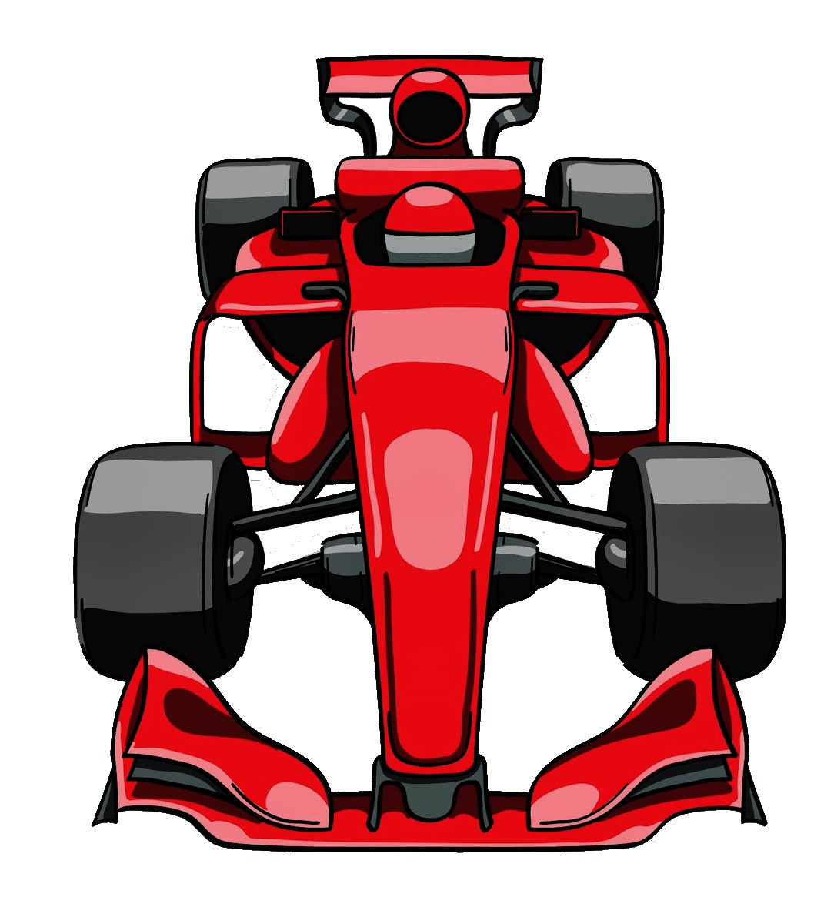
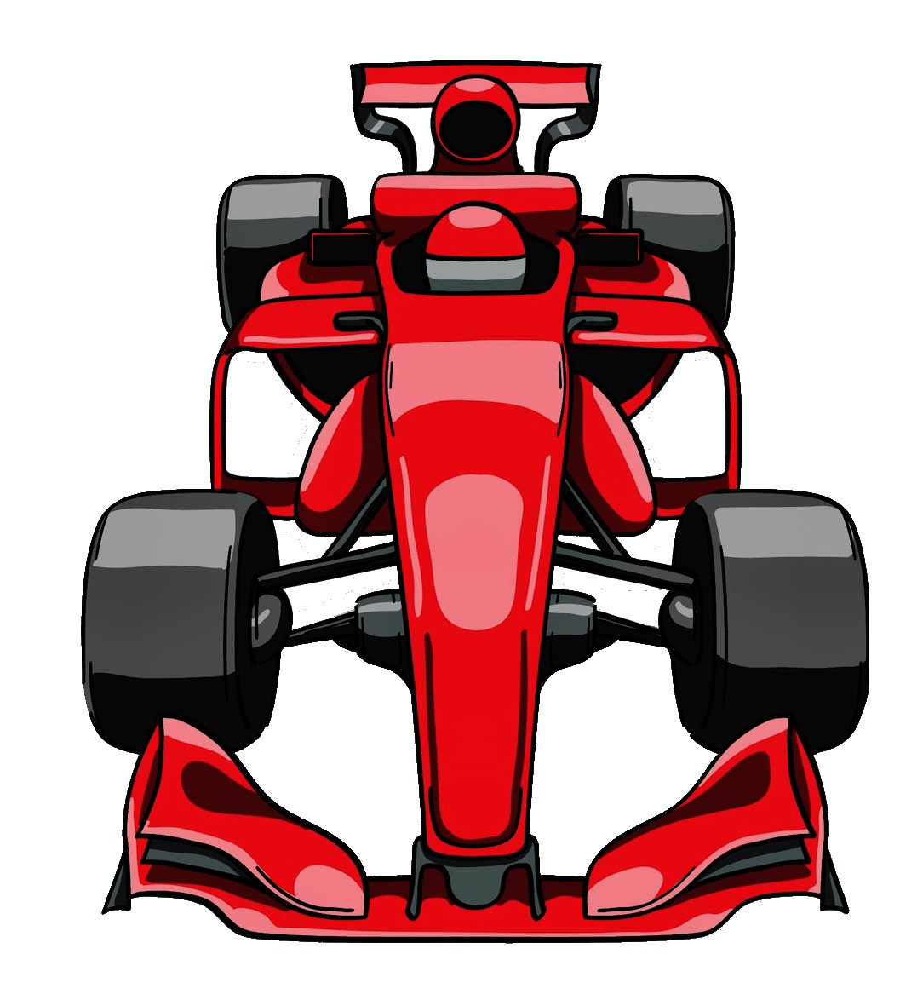

FORMULA 1


Nuestro software trata de un experimento de un auto de la Formula 1 que se mueve con Movimiento Rectilíneo Uniforme (MRUV). Una vez que comiences serás redireccionado a la sección teórica donde encontrarás fórmulas, definiciones y cómo son las conversiones de unidades que se aplicarán.
Una vez que termines de leer ese contenido, podrás empezar con el experimento. Luego de ingresar los datos solicitados, el programa calculará el tiempo, la distancia y la velocidad del vehículo en distintos momentos, y podrás ver una animación de la situación representada.